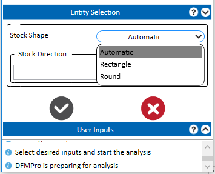
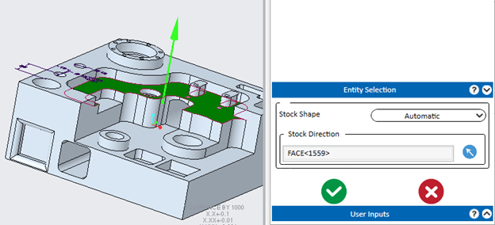
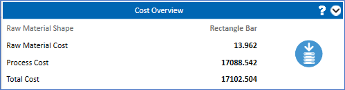

フライス加工の製造プロセスにおいて、ドロップダウンリストからストックタイプとして 標準 を選択し、 解析 ボタンをクリックします。
解析 ボタンをクリックします。
フライス加工の製造プロセスにおいて、ドロップダウンリストからストックタイプとして 標準 を選択し、 解析 ボタンをクリックします。
注記:
ストック形状および方向を定義するためのエンティティ選択グループボックスは、ユーザー入力グループボックスでストックタイプが 標準 に設定され、かつコストライセンスが利用可能な場合にのみ表示されます。

エンティティ選択グループボックスでは、DFMPro はストック形状を定義するために以下の 3 つの選択肢を提供します：
方向を定義するために、グラフィックスエリアから 面 または エッジ を選択します。

DFMPro 解析後、原材料形状がコストグループボックス内に表示されます。

追加されたストック形状は、生成されたコストレポートに表示されます。